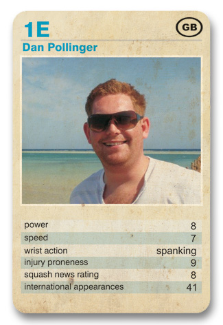

A former lecturer and renowned expert in the field of dogging, Dan Pollinger launched his squash career late, and few would argue against his tag of
'The Comeback King'
The squash world hardly expected Dan to even walk again, let alone compete in World Class matchplay after his horror ankle injury had looked certain to bring an end to a promising career. Barely 3 months on, and the man they call Danny P is back on court and determined to prove a point.
"The fans got me through it" he told squash-news.co.uk, "And I also have Tommi and Kev to thank, for the gruelling recovery programme they got me through - my guns have never been in better shape".
A crowd pleaser, ever eager to don the spandex all-in-one powersuit whilst on-court, Dan made a welcome return to tournament squash on Thursday 03 July. Amazingly, he still finds the time to dispense his expertise to those interested in dogging.
Factfile: Dan Pollinger
D.O.B: 05/02/1980
Strengths: Digging out the lowest of shots from angles that defy the very laws of physics, faultless committment.
Weaknesses: Ankles, tendency to make ill-advised racquet purchases from ebay.
Hobbies: Attending gay bars on the Isle of Wight, Working out like hero, 'The Rock', Dogging.